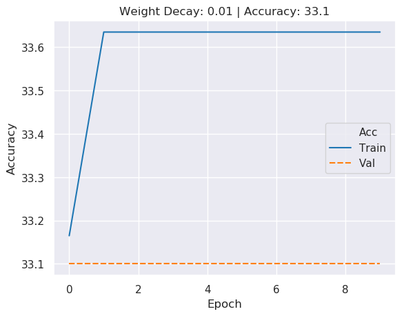
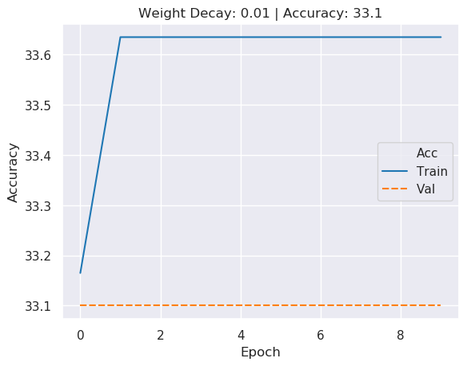
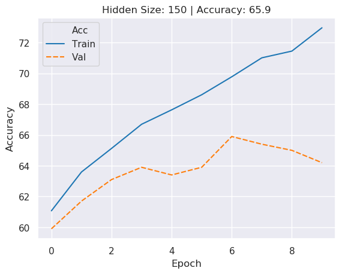

https://github.com/isaachaberman/dsga1011_hw2.git
For the training and hyperparameter search for the RNN, I varied the following hyperparameters: hidden dimension, regularization and encoding concatenation. Through my testing, my best results were a hidden size of 350, a regularization parameter of 0 and a concatentation scheme that concatenated both dimensions of the bidirectional GRU together. With those hyperparameters, the SNLI validation accuracy was 65.5. Below are some of the results of the hyperparameter grid search.
From the figures above, we can see that the maximum validation accuracy was obtained with a hidden dimension of 350. That being said, most of the figures appear to have similar maximum validation accuracies, as well as similar validation accuracy paths. Many of the validation accuracy paths have large jumps in accuracy between the 4th and 6th epoch, and then a smoothing over the remaining epochs. Overall, it does not appear as though the size of the hidden dimension contributes greatly to the accuracy of the model.
 

The figures above display the negative influence of a non-zero regularization parameter on our RNN. While the previous maximum valiation accuracy had been 65.5, the maximum validation accuracy with a non-zero regularization parameter was 33.1 or no better than randomly guessing. I suspect that the model is unable to overfit on the data-set and therefore the regularization parameter helps only to lower the validation accuracy.
While the results of the concatenation technique experiment are not plotted, the results were abundantly clear. I noted a tremendous boost in accuracy gained by using the following concatentation technique: firstly concatenate the two layers of the GRU ouput to a tensor of size Batch Size x 2*Hidden Dimension, then concatenate those resulting matrices together for a matrix of size Batch Size x 4*Hidden Dimension. The other, less successful technique I tried was as follows: sum the GRU output along the first dimension (the bidirection dimension) and then concatenate the resulting matrices of size Batch Size x Hidden Dimension to a matrix of size Batch Size x 2*Hidden Dimension.
For the training and hyperparameter search of the CNN, I varied the following hyperparameters: hidden dimension and regularization. Of the testing I did, the best model had a hidden dimension size of 250 and a regularization parameter of 0.0001. With those hyperparameters, the SNLI validation accuracy was 66.6, marginally better than the accuracy of my best RNN. Below are some of the results of the hyperparameter grid search.

The figures above show the training and validation accuracies from CNN's with different hidden dimension sizes. The maxmimum validation accuracy occured with a hidden dimension of 250. Unlike the hidden dimension grid search with the RNN, there are more varied results in the validation accuracies of the CNN. There is a noticeable uptick in validation accuracy as the hidden dimension increases, with a drop off for the maximum hidden dimension sizes. That being said, the maximum validation accuracy varies within 5 points and thus does not appear to cause much difference in the models.
The influence of the regularization parameter is quite poignant as can be seen in the figures above. There is similar performance with the regularization parameters through 0.01, with a steep drop-off soon afterwards. I suspect the smaller regularization paramters prevent what little over-fitting occurs, while the larger regularization parameters overpower the models and prevent decent results.
The first misclassified example was predicted to be an entailment, while being a contradiction. I believe the misclassification is in part due to the switch in nouns from the premise to the hypothesis, from "three people and a white dog" to "three dogs and a person." That being said, I am surprised that this example is misclassified as some of the nouns in the second clause of the hypothesis do not match the second clause of the premise, despite the first clause of the sentences appearing similar.
This example predicted to be neutral, is a contradiction. The misclassification could occur as the premise is exceptionally long and might have been cut off by the data-loader, resulting in a partial premise.
The final misclassified example is an entailment predicted to be a contradiction. I suspect that the miclassification could have occured due to "husky" in the premise and "dog" in the hypothesis - a word the CNN might not know are synonymous or similar. Similarly, the CNN might not recognize that nuzzling is a sign of friendliness.
The CNN was able to classify this contradiction correctly. While it may have missed the semantic differences between football and soccer, the lack of "touchdown pass" in the premise, enables an easy classification.
This contradiction was also correctly classified. There are two words in both the premise and hypothesis that probably enable the classification, "lamb" and "broom" to "turtle" and "mop."
Lastly, this example was correctly classifed as a contradiction, with an almost unrecognizable hypothesis given the premise.
| Genre | RNN Accuracy | CNN Accuracy |
|---|---|---|
| Fiction | 31.76 | 34.07 |
| Telephone | 33.53 | 32.44 |
| Slate | 29.74 | 31.94 |
| Government | 34.84 | 33.86 |
| Travel | 33.71 | 34.22 |
Above is resulting performance of the best RNN and CNN across the genre's of the MultiNLI validation data-set. It is immediately clear how much better the models performed on the SNLI data-set than the MultiNLI data-set. While the RNN had a validation accuracy of 65.5 over the SNLI data, its maximum validation accuracy on the MultiNLI data was 34.84 ,on the government genre. Similarly, while the CNN had a validation accuracy of 66.6 over the SNLI data, its maximum validation accuracy on the MultiNLI data was 34.22, on the travel genre. Overall, the CNN had higher validation accuracies on three of the genres, fiction, slate and travel, and lower validation accuracies on telephone and government.
| Genre | RNN Accuracy | Fine-Tuned RNN Accuracy | CNN Accuracy | Fine-Tuned CNN Accuracy |
|---|---|---|---|---|
| Fiction | 31.76 | 45.59 | 34.07 | 53.21 |
| Telephone | 33.53 | 43.98 | 32.44 | 53.26 |
| Slate | 29.74 | 41.98 | 31.94 | 50.82 |
| Government | 34.84 | 41.44 | 33.86 | 53.57 |
| Travel | 33.71 | 41.68 | 34.22 | 53.15 |
The table above has the previous results and the performance on fine-tuned MultiNLI models. Across the board, the RNN saw dramatically increased performance, with the minimum accuracy of the fine-tuned model greater than the maximum accuracy of the non-fine-tuned RNN. Overall the best performing genre for the RNN was fiction, with an accuracy of 45.59, while the worst performing genre was government, with an accuracy of 41.44. Similarly, the CNN saw abundant increases in accuracy with the fine-tuned model. The best maximum accuracy was 53.57 compared to a prevous best of 34.22. Of the five genre's the CNN performed best on government and worst on slate. Interestingly, where previously government had been the RNN's best performing genre, it became its worst performing, while it became the CNN's best performing genre, where it had previously been its third best.